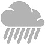

Forecast
- Monday
 - Tuesday
- Wednesday
- Thursday
- Friday
- Saturday
- Sunday
Home of the world renowned rain festival: January 1st - December 31st
Seattle highways have been voted best slow crawl commute by Traffic Connoisseur Magazine
Things that could kill you:
Ever heard of the "Seattle Freeze"? No, not the weather check it out
In short, Seattle is bad for your health.